Christopher Taylor Keifer
Embedded Systems | Software Engineering | Mobile Applications | Systems Engineering
Contact
Email: tkeifer@taylordengineeringsolutions.com
Projects
For the projects shown in this portfolio, I was responsible for the end-to-end design and integration of complete vehicle systems. This included mechanical bracketry and structures, electrical systems and harnessing, pneumatic and hydraulic circuits, embedded software and PLC control logic, and full chassis integration.
Every component required to make the vehicles functional—whether off-the-shelf or custom—was sourced, specified, or developed as part of the overall system architecture. My role covered the entire lifecycle from concept and design through installation, commissioning, and operational validation, ensuring all subsystems worked together as a reliable, cohesive platform.
10K Gallon refueler for Port Authority of New York New Jersey

Integrated HMI
Built to spec for project bid
PLC logic system for redundancy
DOT/Over-the-road approved
Transmission Driven pumping system - 800 gpm
7K Gallon refueler with Mid-Lift

3K gallons split compartment GSE Refueler with Def Dispensing Unit

In Cab Controls
Integrated 200 gal def dispensing system
1.5K Diesel/1.5K Gasoline
Integrated Hydraulic pumping system - 40/20 gpm
1.2K Gallon split compartment On-Demand Mobile Refueler
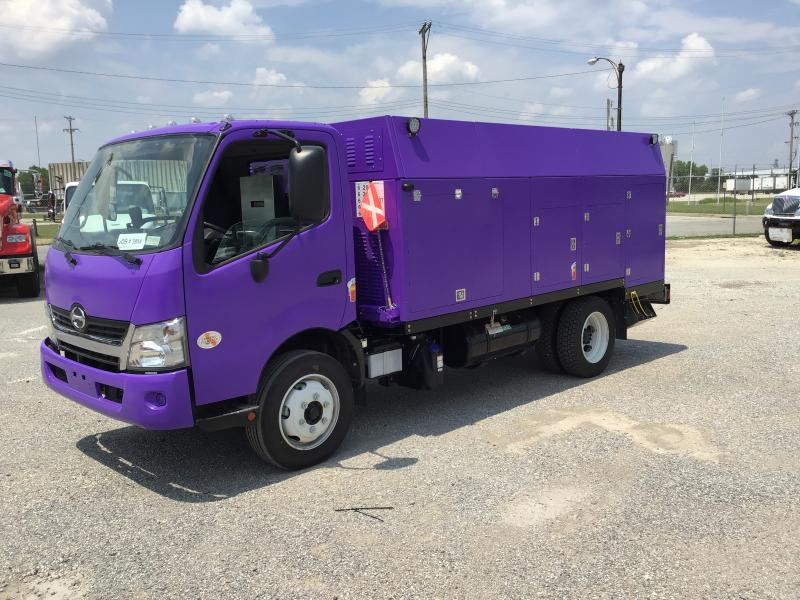 In Cab Controls
normal
For refueling consumer or commercial vehicles
DOT/Over-the-road approved
PLC controlled
Hydraulic Pumping system -10 gpm
1.2K Split Tank Refueler

GSE Truck with dual compartment tank
Remote Controlled Hi-Rail Grapple Truck
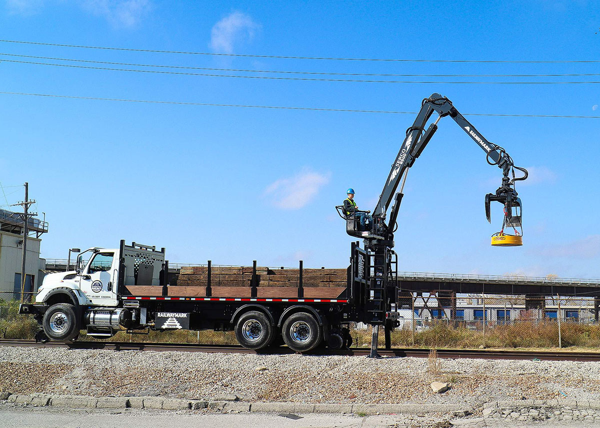 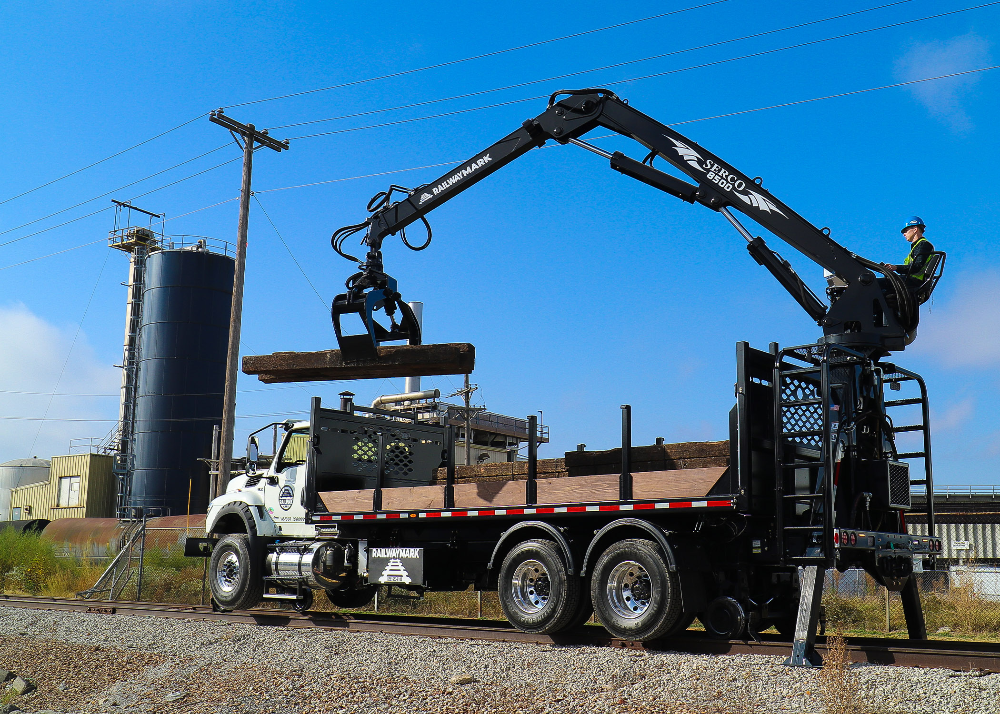 Integrated HMI
CAN controlled Remote Drive System
In-cab HMI for Redundancy
Customized Hydraulic system
Hi-Rail High Flow Refueler
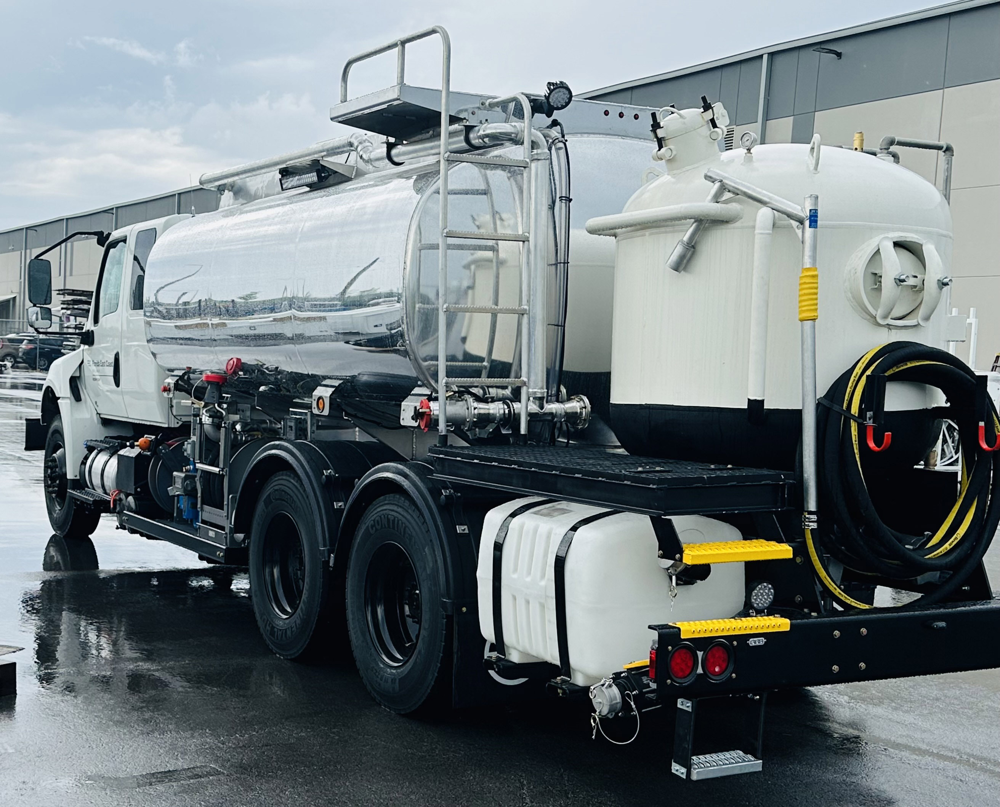High Flow Rail Refueler
Large Section Truck
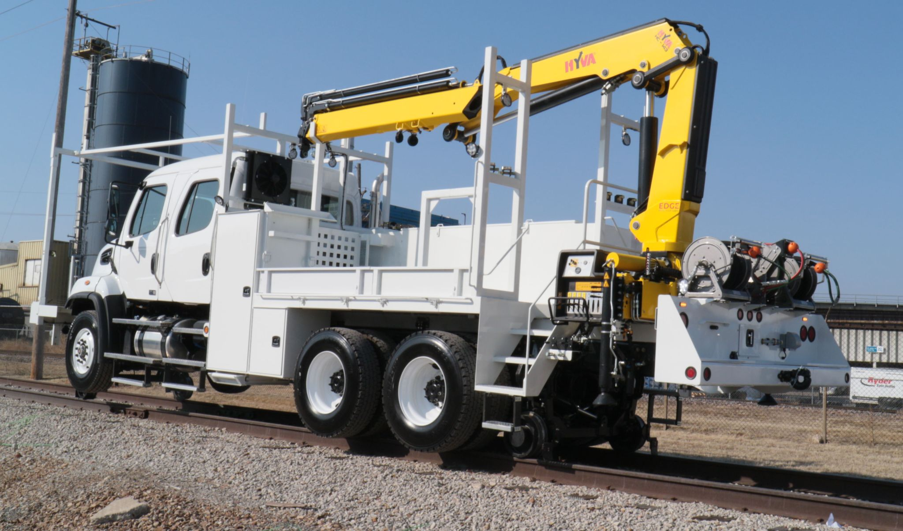 Integrated HMI with Remote Crane control
CAN controlled Remote Drive System
In-cab HMI for Redundancy
Customized Hydraulic system
Integrated Pneumatic system for tools
Electrical Controls Schematics and Designs
I create clear, accurate installation schematics that translate system designs into practical, installer-ready documentation. These schematics define wiring routes, connector pinouts, grounding points, and component locations, ensuring systems can be installed correctly, efficiently, and consistently.


I create clear, accurate installation schematics that translate system designs into practical, installer-ready documentation. These schematics define wiring routes, connector pinouts, grounding points, and component locations, ensuring systems can be installed correctly, efficiently, and consistently.
Electrical Harness Design
I have designed hundreds of custom electrical wiring harnesses tailored to specific vehicles, machines, and operating environments. My process starts with understanding system requirements—power distribution, signal integrity, environmental exposure, and regulatory constraints—then translating those needs into reliable, serviceable harness layouts.
 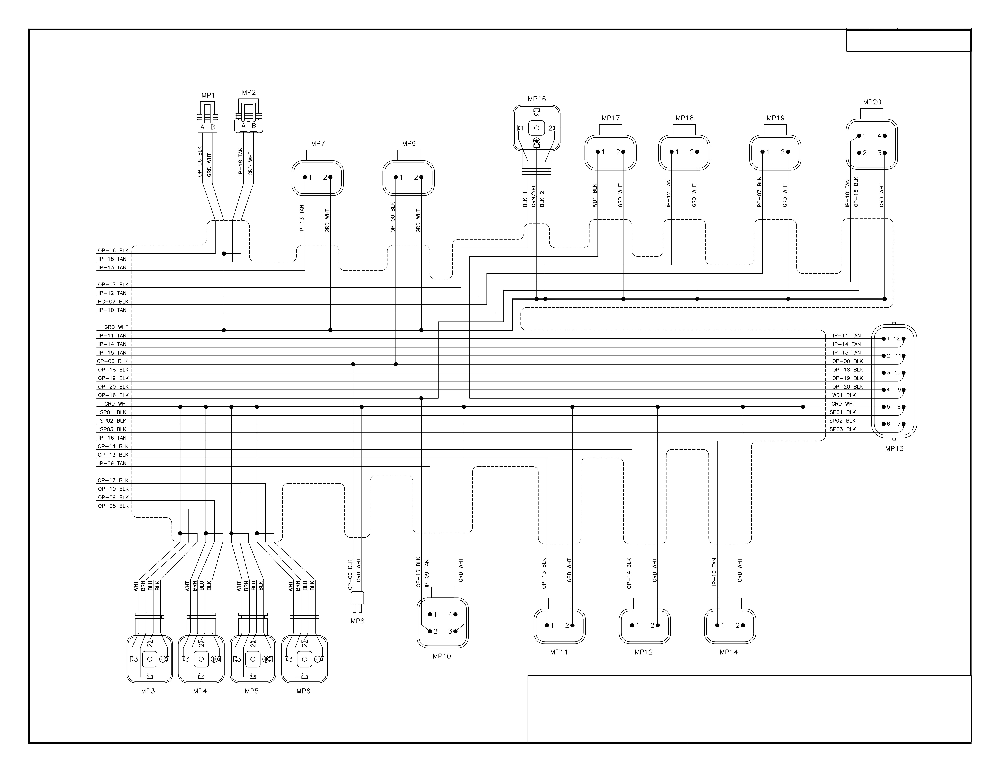
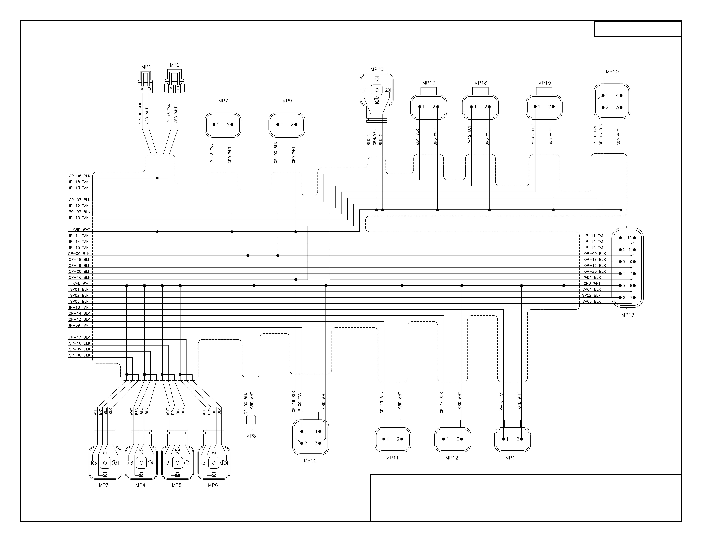
I develop schematics, connector pinouts, and routing strategies, selecting appropriate wire gauges, shielding, connectors, and protective materials to ensure durability, ease of installation, and long-term reliability. Designs account for vibration, heat, moisture, maintenance access, and manufacturing efficiency, and are documented clearly for production, testing, and troubleshooting.
Electrical Enclosure Design
I design custom electrical enclosures that protect critical components while supporting safe, reliable system operation. My work includes enclosure layout, component placement, thermal considerations, and selection of materials and ingress protection to match the operating environment.
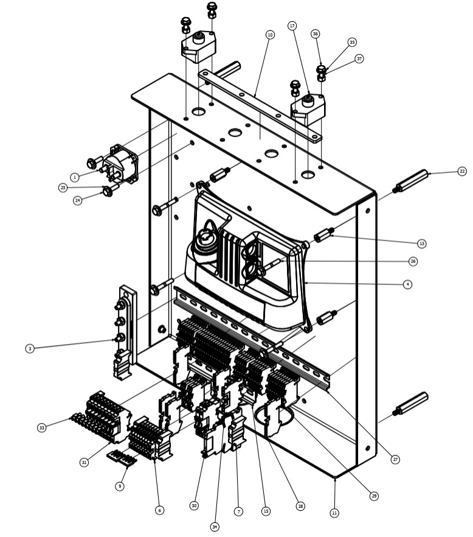Designs account for electrical safety, heat dissipation, service access, and installation constraints. I develop detailed layouts and documentation that support efficient assembly, compliance, and long-term maintainability in industrial and mobile applications.
Hydraulic Systems
I design custom mobile hydraulic systems tailored to vehicle-specific and application-specific requirements. My work covers system architecture, component selection, and circuit design to achieve precise control, reliability, and safe operation under demanding real-world conditions.
 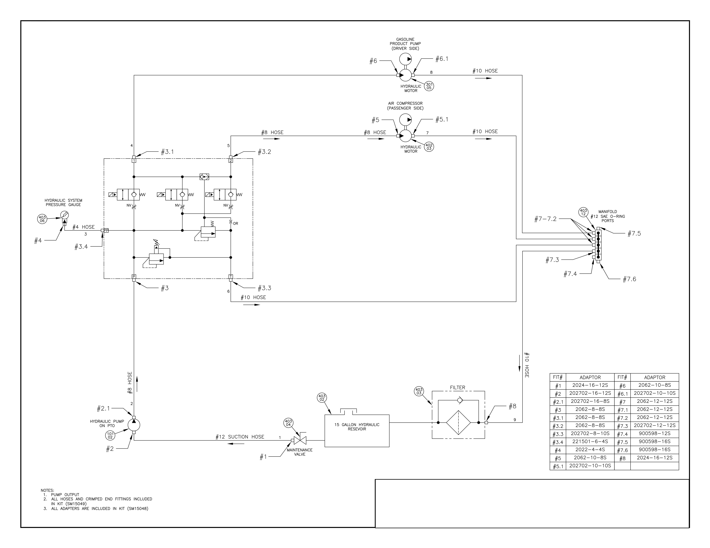
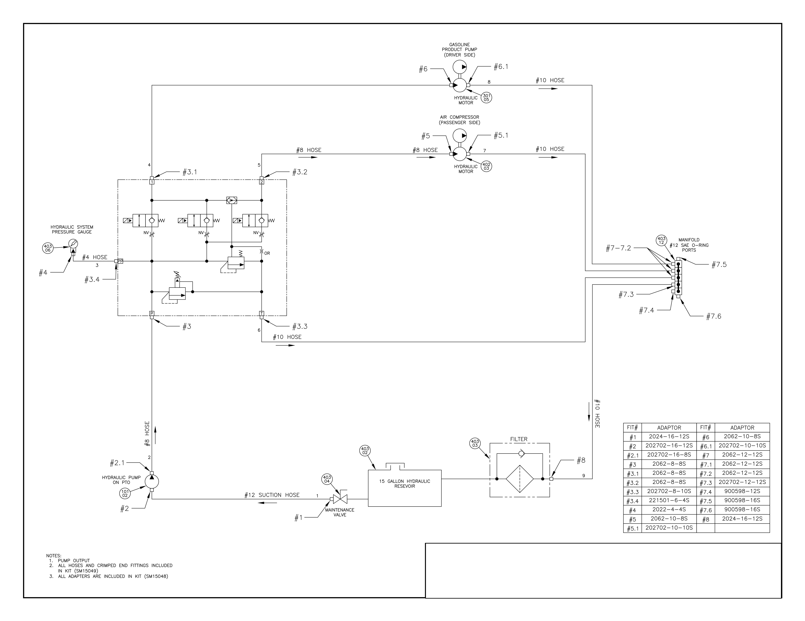
Designs account for load cases, duty cycles, pressure and flow requirements, thermal behavior, and integration with electrical and control systems. I develop clear schematics and documentation that support efficient installation, commissioning, and long-term serviceability in mobile and off-highway environments.
Pneumatic Systems
I design custom pneumatic systems tailored to application-specific requirements, focusing on reliable actuation, control, and efficiency. My work includes system layout, component selection, and circuit design to ensure consistent performance across varying operating conditions.

Designs account for pressure requirements, air quality, duty cycles, response times, and environmental factors. I develop clear schematics and documentation that support efficient installation, commissioning, and long-term serviceability in industrial and mobile applications.
Piping Systems
I design custom fuel piping systems for jet refuelers, engineered to meet stringent safety, performance, and regulatory requirements. My work includes system layout, component selection, and routing design to ensure reliable fuel delivery, pressure control, and contamination prevention.

Designs account for flow rates, pressure losses, thermal expansion, vibration, and service access, as well as integration with pumps, valves, filtration, and metering systems. I produce clear schematics and installation documentation that support safe operation, efficient assembly, and long-term maintainability in demanding airport and mobile fueling environments.
Mechanical Designs
I design custom mechanical bracketry and assemblies to support secure mounting and integration of components in mobile and industrial systems. My work focuses on structural integrity, manufacturability, and ease of installation while accounting for load cases, vibration, and environmental exposure.


Subframe Design for ODMR
 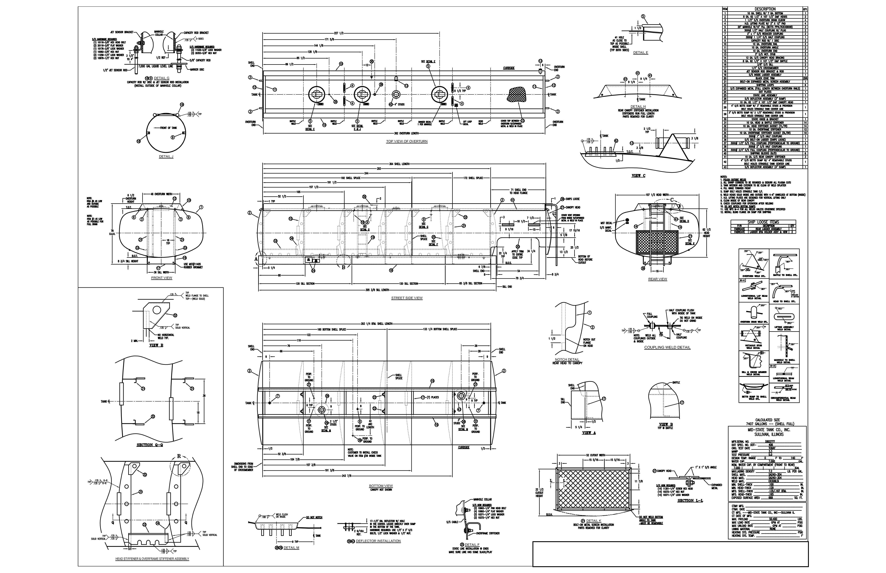
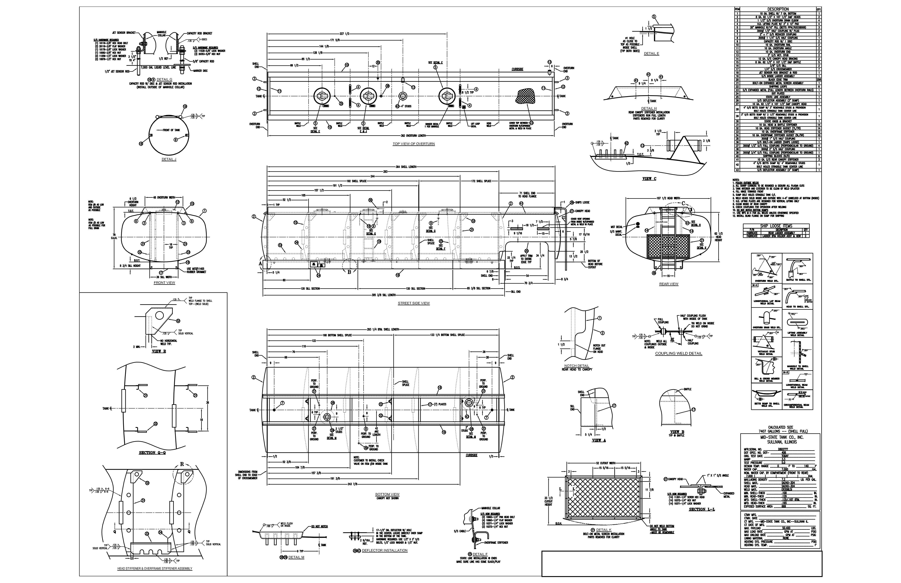
Tank Design
Designs are developed with clear drawings and specifications to ensure repeatable fabrication, efficient assembly, and long-term durability in real-world operating conditions.
Human-Machine Interfaces (HMIs)
I design custom human-machine interfaces (HMIs) that translate complex system behavior into clear, intuitive operator displays. My focus is on usability, situational awareness, and operational efficiency—ensuring operators can quickly understand system status and respond confidently.
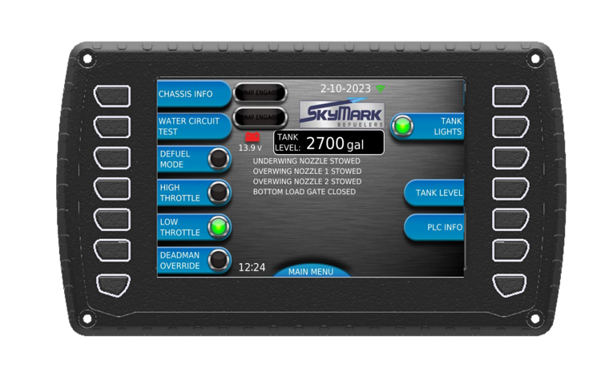HMI designs incorporate alarm management, status visualization, diagnostics, and user workflows tailored to the application and operating environment. I develop interfaces that integrate seamlessly with control systems and are documented to support consistent deployment, commissioning, and long-term maintenance.
Customizeable Inputs/Outputs

Alerts for Safe Use

Alert Logging for End User Data Collection

Customized CAN Communication
I design and implement custom CAN communication solutions tailored to vehicle and system requirements, including SAE J1939 and other certified CAN-based protocols. My work covers network architecture, message definition, signal mapping, and integration across ECUs, HMIs, sensors, and control units.
 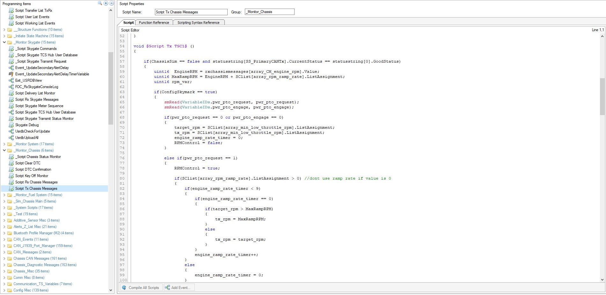
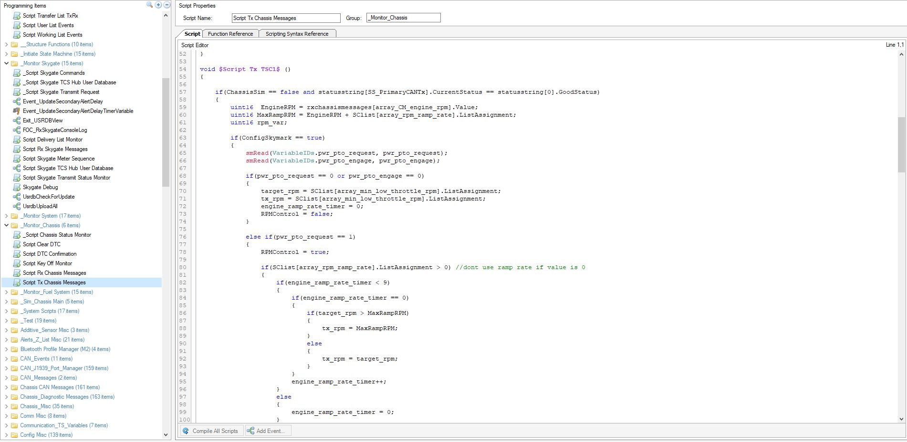
Solutions are developed with a focus on reliability, interoperability, and compliance, ensuring stable communication in harsh mobile environments. I provide clear documentation and diagnostics support to enable efficient commissioning, troubleshooting, and long-term system maintenance.
Customized PLC Logic
I develop PLC control logic using Ladder Logic to deliver reliable, maintainable automation solutions. My work includes control architecture design, I/O mapping, interlocks, sequencing, and fault handling to ensure safe and predictable system behavior.
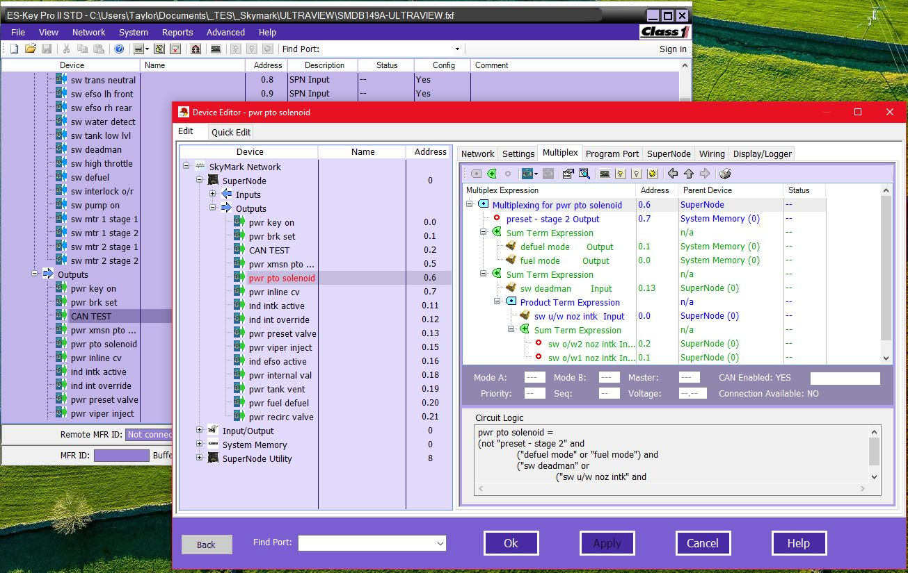Programs are structured for clarity and long-term support, with clear naming conventions, comments, and documentation. Designs support efficient commissioning, troubleshooting, and future expansion across industrial and mobile control applications.
Extensive Guide Development
I develop comprehensive user guides that support effective training, safe operation, and efficient troubleshooting. Documentation is structured to make complex systems easy to understand, combining clear explanations, step-by-step procedures, and visual references.
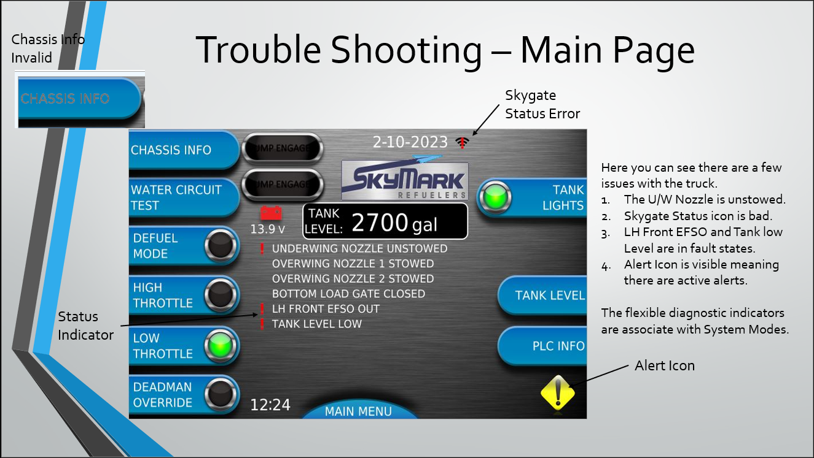 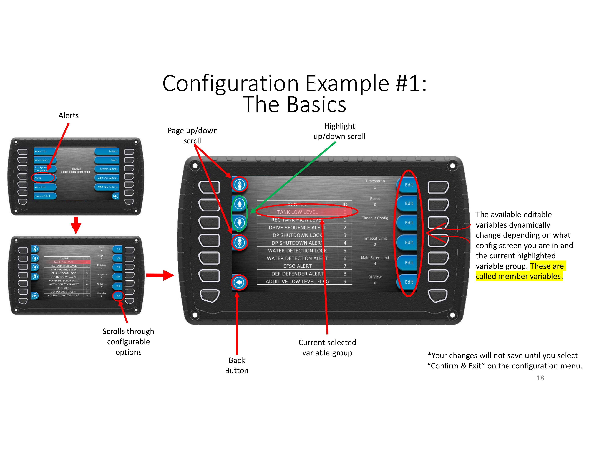 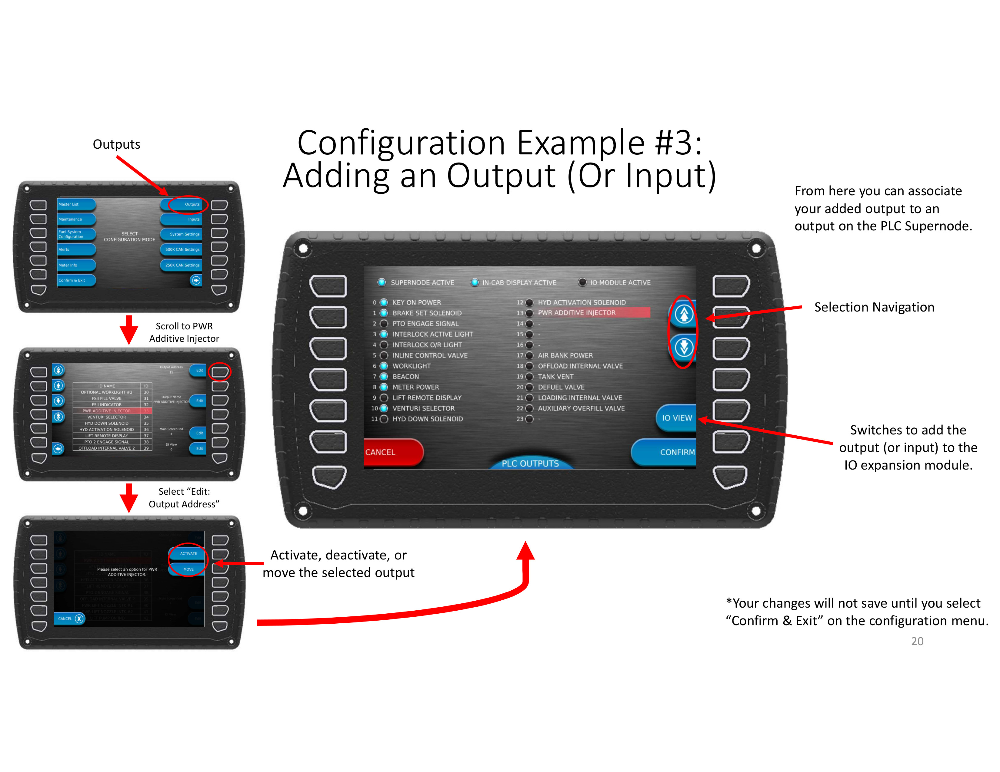Guides cover normal operation, startup and shutdown, alarms and fault conditions, and maintenance tasks. Content is designed for both new and experienced users, reducing training time, minimizing errors, and enabling faster issue resolution in the field.